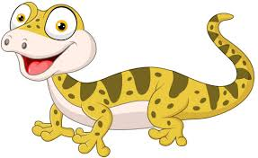

SALAMANDRA
Las salamandras adultas son animales terrestres,
que únicamente acuden al agua cuando las hembras alumbran a las larvas.
Esto es debido a que los adultos tienen pulmones y las larvas branquias.
Son de hábitos principalmente crepusculares y nocturnos
Las salamandras y tritones se alimentan generalmente de insectos vivos.
Puedes encontrar los en zonas húmedas, debajo de troncos y rocas.
